# Per il nostro lavoro, le variabili di interesse principali
# sono le coordinate geografiche dell'evento, la data di inizio
# dell'episodio di violenza e la stima più precisa del numero
# totale di morti. Storia statistica del conflitto Israelo-Palestinese dal 1989 ad oggi
1 Uppsala Conflict Data Program
L’Uppsala Conflict Data Program (UCDP) è un’iniziativa del Uppsala University’s Department of Peace and Conflict Research, volta a fornire dati completi, dettagliati dal punto di vista geografico e temporale sulla violenza organizzata a livello globale. L’UCDP Georeferenced Event Dataset (GED) copre gli eventi di violenza dal 1989 al 2023 e definisce un evento come “un incidente di violenza letale che coinvolge attori organizzati, con almeno una vittima diretta, che si verifica in un momento e in un luogo specifici”. La raccolta dei dati si basa su servizi di newswire globali, media locali, ONG e altre fonti specializzate, con rigorosi processi di validazione per garantire qualità e affidabilità.
2 Variabili presenti nel dataset
L’UCDP Georeferenced Event Dataset rileva una vasta gamma di variabili per ogni evento, tra cui dettagli sugli attori coinvolti, coordinate spazio-temporali ed una stima del numero di vittime scaturite dall’evento, differenziando per vittime appartenenti ad una delle parti contrapposte e vittime civili.
3 Conflitto Israelo-Palestinese
Il conflitto israelo-palestinese è una delle dispute più longeve e complesse del mondo moderno, originato alla fine del XIX secolo con l’ascesa del sionismo e del nazionalismo arabo. La tensione si intensificò durante il mandato britannico in Palestina e culminò nel 1948 con la fondazione dello Stato di Israele, evento noto come Nakba per i palestinesi, che portò all’esodo di centinaia di migliaia di persone. Guerre successive (1948, 1967, 1973) consolidarono l’occupazione israeliana di territori come Cisgiordania, Gerusalemme Est e Gaza. I tentativi di pace, come gli Accordi di Oslo (1993), hanno avuto un successo limitato, e le tensioni permangono su questioni centrali: confini, rifugiati, sicurezza e lo status di Gerusalemme.
Dal 1989, il conflitto ha visto periodi alterni di violenza e negoziati, come la Seconda Intifada (2000-2005), il ritiro israeliano da Gaza (2005) e la vittoria elettorale di Hamas (2006), che ha diviso i territori palestinesi. Ripetuti scontri armati tra Israele e Hamas (2008, 2012, 2014, 2021) hanno segnato la Striscia di Gaza, mentre in Cisgiordania l’espansione degli insediamenti e le incursioni militari hanno aggravato le tensioni.
Le principali fazioni palestinesi includono:
Hamas: Movimento islamista e organizzazione politica-militare, controlla la Striscia di Gaza dal 2007. È nota per il suo rifiuto di riconoscere Israele e il suo impegno nella resistenza armata contro l’occupazione israeliana. È considerata un’organizzazione terroristica da Israele, Stati Uniti, Unione Europea e altri.
PFLP (Fronte Popolare per la Liberazione della Palestina): Gruppo marxista-leninista e laico, parte dell’Organizzazione per la Liberazione della Palestina (OLP). È noto per il suo passato di attentati e dirottamenti negli anni ’60-’70. Il PFLP è critico sia nei confronti di Israele che dell’Autorità Palestinese.
PFLP-GC (Fronte Popolare per la Liberazione della Palestina – Comando Generale): Una scissione del PFLP, con una forte impronta militare. È attivo principalmente in Siria e Libano, con operazioni contro Israele.
Fatah: Il principale partito dell’OLP e al potere in Cisgiordania attraverso l’Autorità Palestinese (PNA). In passato, ha adottato tattiche di lotta armata, ma oggi sostiene principalmente negoziati con Israele.
PIJ (Jihad Islamica Palestinese): Gruppo islamista militante, più piccolo di Hamas ma ugualmente focalizzato sulla resistenza armata contro Israele. Si oppone a qualsiasi trattativa di pace.
PNA (Autorità Nazionale Palestinese): Il governo semi-autonomo in Cisgiordania creato dagli Accordi di Oslo nel 1994. Controllato principalmente da Fatah, la PNA è spesso in conflitto politico e talvolta militare con Israele.
AMB (Al-Aqsa Martyrs’ Brigades): Ala militante legata a Fatah, nota per gli attacchi contro civili e militari israeliani durante la Seconda Intifada.
PRC (Comitati di Resistenza Popolare): Gruppo armato con base a Gaza, noto per attacchi contro Israele e cooperazioni con altre fazioni militanti come Hamas.
Dal 2020, gli Accordi di Abramo hanno normalizzato i rapporti tra Israele e alcuni Stati arabi, ma non hanno migliorato la situazione con i palestinesi. Recenti escalation (2023-2024), incluso il conflitto tra Israele e Hamas, hanno portato a una crisi umanitaria senza precedenti a Gaza, aggravando ulteriormente lo stallo politico.
4 Il dataset considerato
load("IS_PAL.RData")
war$side_b <- factor(war$side_b)
war$adm_1 <- factor(war$adm_1)
war$event_clarity <- factor(war$event_clarity)
war$date_prec <- factor(war$date_prec)
rmarkdown::paged_table(head(war, 10))Il dataset da noi considerato riguarda soltanto gli eventi del conflitto Israelo-Palestinese avvenuti nel territorio Israeliano. Le variabili rilevanti per la nostra analisi sono:
id: Identificatore univoco per ogni evento nel dataset.
year: L’anno in cui si è verificato l’evento di violenza.
dyad_name: Il nome della diade di fazioni contrapposte coinvolte nell’evento (ad esempio, “Governo di Israele - Hamas”).
side_b: La fazione coinvolta nell’evento, opposta al governo di Israele (può essere una delle fazioni palestinesi, come Hamas o Fatah).
adm_1: Livello amministrativo 1, che rappresenta la suddivisione regionale in cui è avvenuto l’evento (come una provincia o un distretto).
latitude: La latitudine geografica in cui l’evento si è verificato.
longitude: La longitudine geografica in cui l’evento si è verificato.
event_clarity: Indica il livello di chiarezza del report sull’evento, con valori che riflettono la certezza dei dettagli (ad esempio, se l’evento è stato chiaramente documentato o se ci sono incertezze).
date_prec: Precisione della data dell’evento, indicando se la data è certa o approssimativa.
date_start: La data di inizio dell’evento di violenza.
date_end: La data di fine dell’evento di violenza, se rilevante.
deaths_a: Numero di morti tra le forze o i membri della fazione “a” (ad esempio, Israele).
deaths_b: Numero di morti tra le forze o i membri della fazione “b” (ad esempio, Hamas o Fatah).
deaths_civilians: Numero di morti tra i civili durante l’evento.
deaths_unknown: Numero di morti la cui affiliazione o identità non è stata determinata.
best: La stima migliore del numero totale di morti, basata sui dati disponibili.
high: La stima più alta del numero di morti, indicando il massimo stimato.
low: La stima più bassa del numero di morti, indicando il minimo stimato.
5 Qualità del dato
Quadro sinottico per variabili di qualità del dato
war$event_duration <- as.numeric((war$date_end - war$date_start)/(3600*24)) #durata dell'evento
#la durata veniva restituita in secondi, l'ho trasformata in orehist(war$event_duration)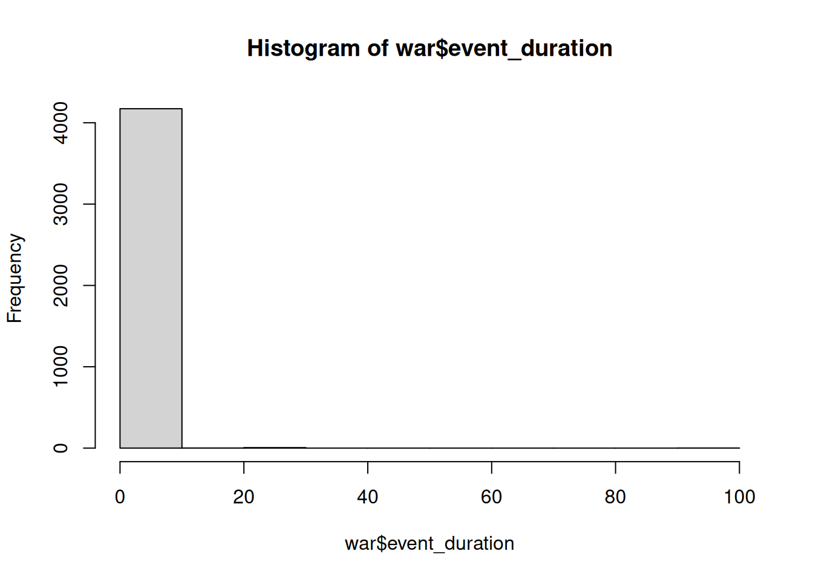
hist(war$event_duration[war$event_duration!=0])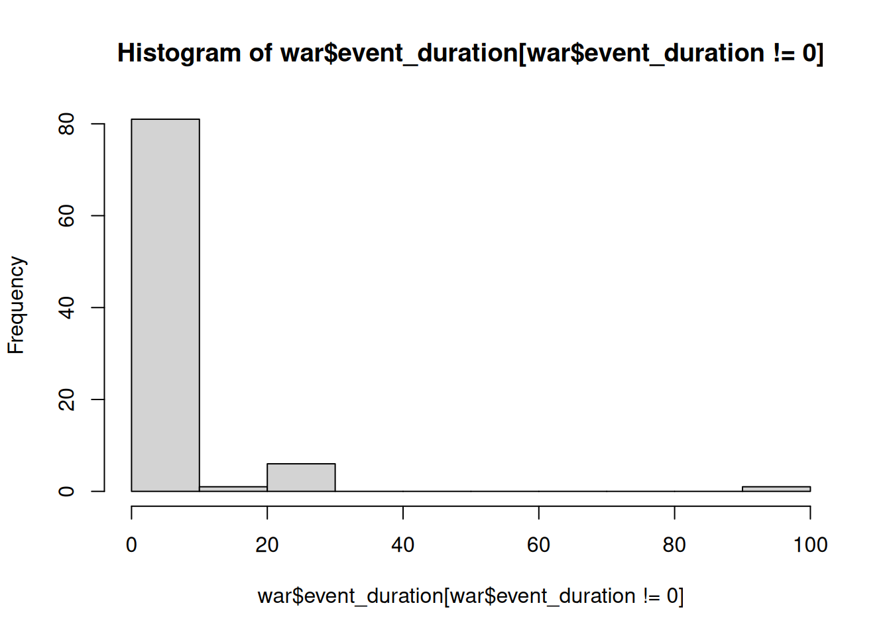
addmargins(table(war$event_clarity[war$event_duration!=0],
war$event_duration[war$event_duration!=0]))
1 2 4 5 7 8 13 24 29 30 99 Sum
1 52 5 0 1 1 1 0 0 2 1 1 64
2 15 3 1 0 1 1 1 1 1 1 0 25
Sum 67 8 1 1 2 2 1 1 3 2 1 89#89 eventi su 4181 non si concludono nello stesso giorno, 52 degli 89 eventi si
#sono conclusi il giorno successivo a quello di inizio
##distribuzione di event_clarity condizionatamente a date_prec
ggplot(data = war) +
geom_bar(mapping = aes(x = event_clarity, fill = date_prec), position = "fill")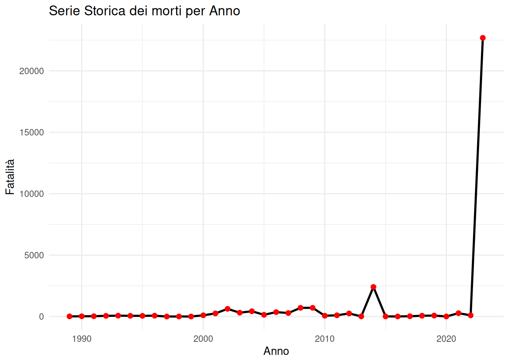
#morti per anno
fatalities <- war |>
group_by(year) |>
summarise(fatalities_per_year = sum(best))
ggplot(fatalities, aes(x = year, y = fatalities_per_year)) +
geom_line(color = "black", linewidth = 1) + # Linea blu
geom_point(color = "red", size = 2) + # Punti rossi per enfatizzare i dati
labs(title = "Serie Storica dei morti per Anno",
x = "Anno",
y = "Fatalità") +
theme_minimal()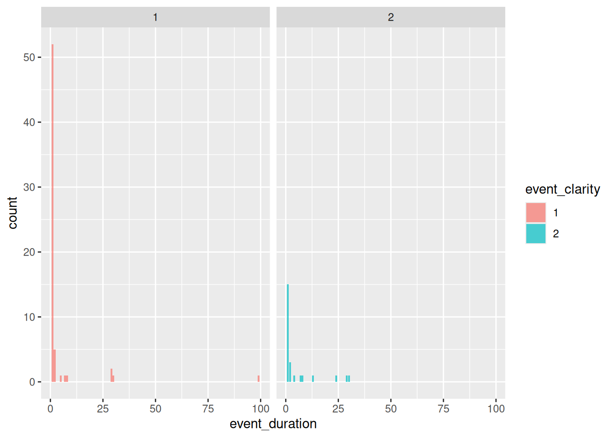
#densità di event_duration condizionata a event_clarity
filtered_war <- war |>
filter(event_duration!=0)
ggplot(filtered_war, aes(x = event_duration, fill = event_clarity)) +
geom_density(alpha = 0.7) +
facet_wrap(~ event_clarity) +
labs(
title = "Distribuzione della densità della durata degli eventi per chiarezza",
x = "Durata dell'evento",
y = "Densità")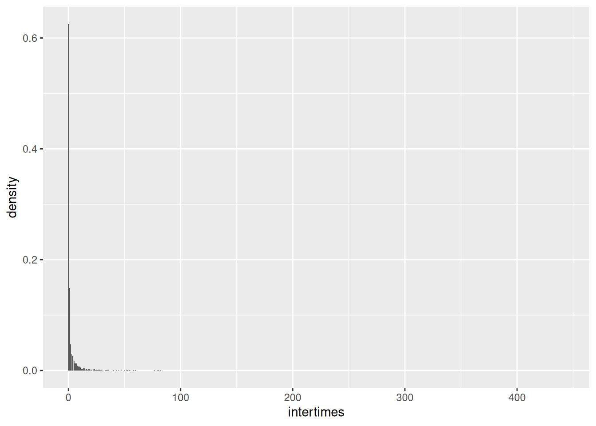
#distribuzione di event_duration condizionata a event_clarity
ggplot(filtered_war, aes(x = event_duration, fill = event_clarity)) +
geom_bar(alpha = 0.7) +
facet_wrap(~ event_clarity)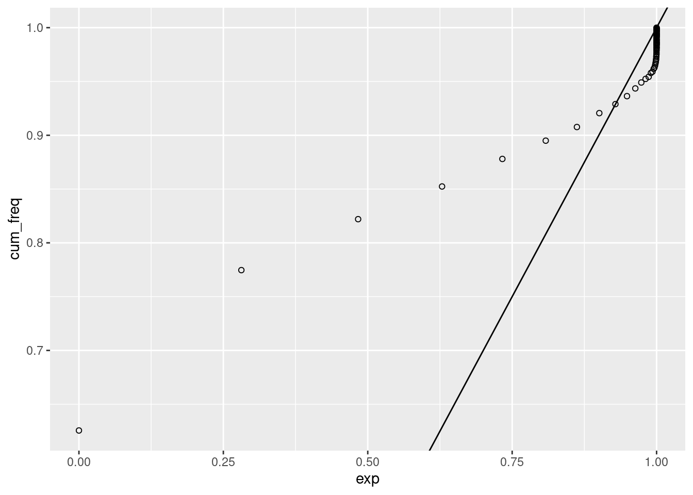
6 Analisi degli intertempi
date_start <- war$date_start
date_start <- as.Date(date_start, format = "%Y-%m-%d")
days_since_start <- as.numeric(date_start - min(date_start))
war$days_since_start <- days_since_start
war$intertimes <- c(NA, diff(war$days_since_start))
intertimes_table <- table(war$intertimes[-1])
intertimes <- as.integer(names(intertimes_table))
n_total <- sum(intertimes_table)
abs_freq <- as.vector(intertimes_table)
rel_freq <- abs_freq/n_total
cum_freq <- cumsum(rel_freq)
surv <- (1 - cum_freq) + rel_freq
intertimes_distr <- data.frame(intertimes = intertimes, abs_freq = abs_freq,
rel_freq = rel_freq, cum_freq = cum_freq, surv = surv)
ggplot(intertimes_distr, aes(x = intertimes, y = rel_freq)) +
geom_col() + ylab("density") +
xlab("intertimes")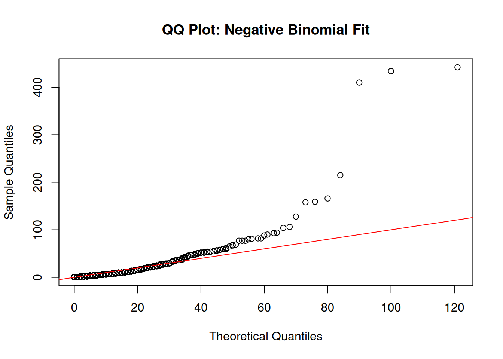
ggplot(intertimes_distr, aes(x = intertimes, y = cum_freq)) +
geom_point(shape = 1) +
geom_line(linewidth = 0.2) + ylab("ecdf") +
xlab("intertimes")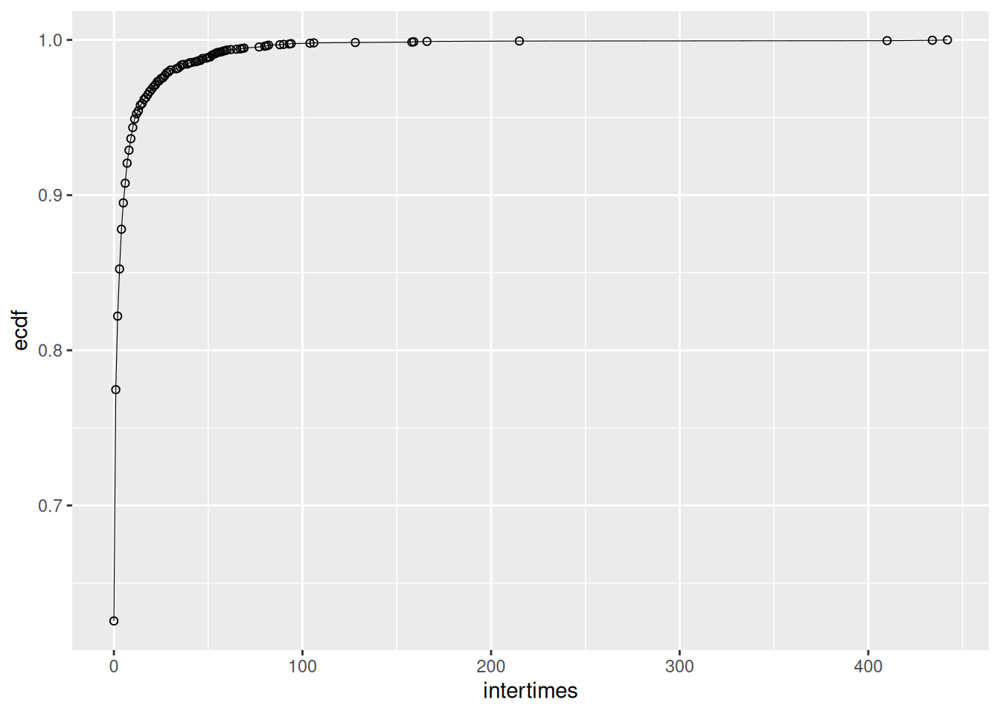
ggplot(intertimes_distr, aes(x = log(intertimes), y = log(surv))) +
geom_point(shape = 1) +
geom_line(linewidth = 0.2) +
ylab("log(survival function)") +
xlab("log(intertimes)") +
geom_smooth(method = "lm", se = FALSE, linewidth = 0.3, color = "red")`geom_smooth()` using formula = 'y ~ x'Warning: Removed 1 row containing non-finite outside the scale range
(`stat_smooth()`).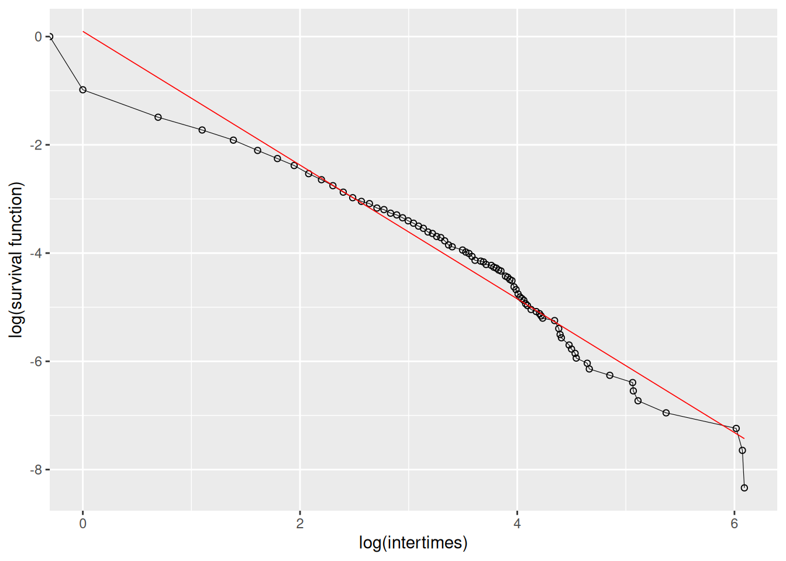
x <- war$intertimes[-1]
exp_fit <- MASS::fitdistr(x, "exponential")
teor_distr <- pexp(intertimes_distr$intertimes, rate = exp_fit$estimate)
intertimes_distr$exp <- teor_distr
ggplot(data = intertimes_distr) +
geom_point(aes(x = exp, y = cum_freq), col = "red", pch = 1) +
geom_abline(intercept = 0, slope = 1)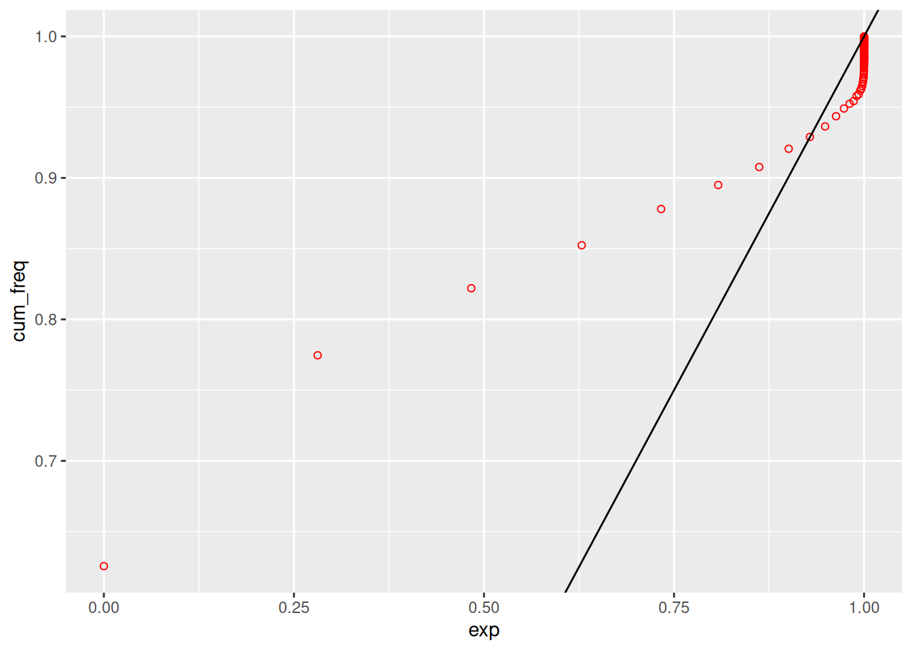
6.1 Plot processo di punto
library(ggplot2)
library(sf)Linking to GEOS 3.12.1, GDAL 3.8.4, PROJ 9.4.0; sf_use_s2() is TRUElibrary(rnaturalearth)
library(rnaturalearthdata)
Attaching package: 'rnaturalearthdata'The following object is masked from 'package:rnaturalearth':
countries110library(dplyr)
df <- data.frame(x = war$latitude,
y = war$longitude,
t = war$days_since_start,
side_b = war$side_b)
# Load the world map
world <- ne_countries(scale = "medium", returnclass = "sf")
# Define a bounding box for Israel and the surrounding region
# Adjust the range of latitudes and longitudes as necessary
region_bbox <- st_bbox(c(
xmin = 33.0, # Adjust this for more western longitude
xmax = 37.5, # Adjust this for more eastern longitude
ymin = 29.5, # Adjust this for more southern latitude
ymax = 34.5 # Adjust this for more northern latitude
), crs = st_crs(4326)) # WGS84 coordinate reference system
# Crop the world map to the bounding box
region <- st_crop(world, region_bbox)Warning: attribute variables are assumed to be spatially constant throughout
all geometries# Convert df to an sf object
df_sf <- st_as_sf(df, coords = c("y", "x"), crs = 4326)
# Plot the data with the map
p1 <- ggplot() +
geom_sf(data = region, fill = "lightgray", color = "black") + # Region map
geom_sf(data = df_sf, aes(color = side_b), size = 0.5, alpha = 0.7) + # Points from df
theme_minimal() +
coord_sf(xlim = c(region_bbox$xmin, region_bbox$xmax),
ylim = c(region_bbox$ymin, region_bbox$ymax),
expand = FALSE) +
labs(title = paste0("Conflict Events in Israel"),
x = "Longitude",
y = "Latitude")
p1 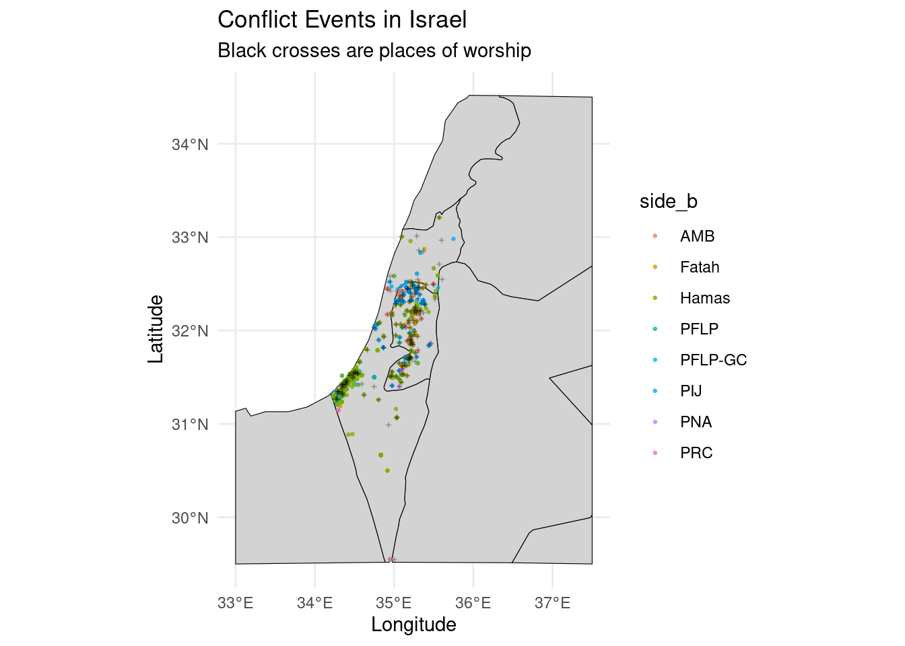
w_isr <- read.csv("places_of_worship_israel.csv", sep = ",")[,-1]
colnames(w_isr) <- c("x", "y")CALCOLARE TUTTE LE DISTANZE TRA I PUNTI-EVENTO ED I LUOGHI DI CULTO E PER CIASCUN PUNTO EVENTO SELEZIONARE IL LUOGO DI CULTO CON DISTANZA MINIMA
# Load necessary libraries
library(foreach)
Attaching package: 'foreach'The following objects are masked from 'package:purrr':
accumulate, whenlibrary(doParallel)Loading required package: iteratorsLoading required package: parallel# Set up the parallel backend
num_cores <- round(parallel::detectCores()/2)
cl <- makeCluster(num_cores)
registerDoParallel(cl)
# Parallel computation with foreach
min_distance_from_i <- foreach(i = 1:nrow(war), .combine = c, .packages = "base") %dopar% {
# Initialize variables within the loop
distance_from_i <- numeric(nrow(w_isr))
# Extract coordinates for the i-th row of 'war'
xy_i <- as.numeric(war[i, c("latitude", "longitude")])
# Compute distances for all rows in 'w_isr'
for (j in 1:nrow(w_isr)) {
xy_j <- as.numeric(w_isr[j, , drop = TRUE])
distance_from_i[j] <- sum((xy_i - xy_j)^2)
}
# Return the index of the minimum distance
which.min(distance_from_i)
}
# Stop the parallel backend
stopCluster(cl)
# Result is stored in 'min_distance_from_i'
#
w_isr <- w_isr[unique(min_distance_from_i),]w_isr_sf <- st_as_sf(w_isr, coords = c("y", "x"), crs = 4326)
p1 + geom_sf(data = w_isr_sf, size = 0.3, alpha = 0.2) + labs(subtitle = "Black points are places of worship")Coordinate system already present. Adding new coordinate system, which will
replace the existing one.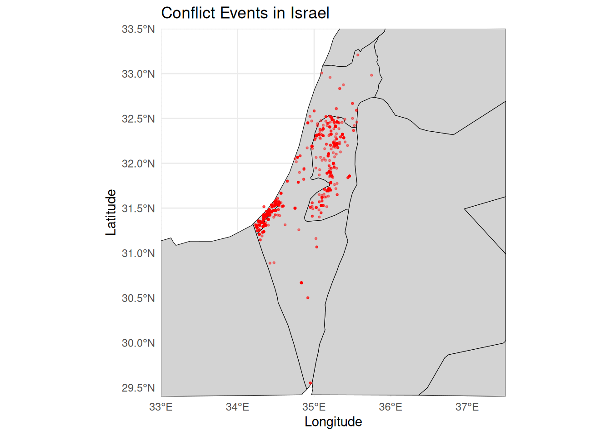